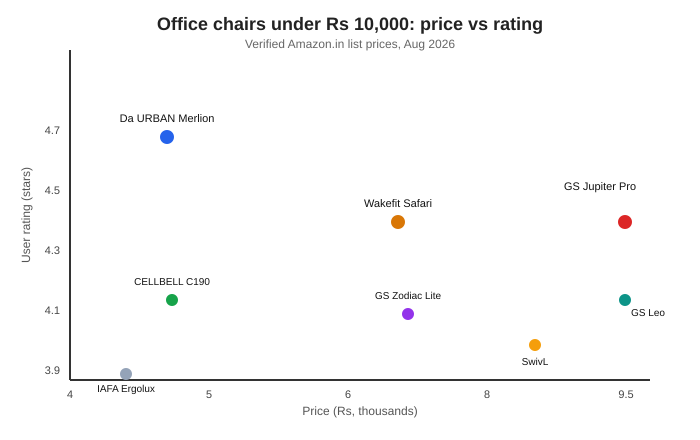

Best Office Chair Under Rs 10,000 in India (2026): Budget Ergonomic Picks
The short version
TL;DR: For most buyers the Green Soul Jupiter Pro is the best office chair under Rs 10,000 in India right now: around Rs 9,490 on Amazon.in, it packs the fullest ergonomic kit in this price band (seat slider, 4D armrests, adjustable lumbar, multi-lock synchro-tilt recline, 120 kg weight capacity) and carries a 3-year warranty. If you want to spend less, the Da URBAN Merlion at roughly Rs 4,899 is the value pick with 9,300-plus ratings at 4.7 stars, and the Wakefit Safari around Rs 6,397 is the best mid-range mesh option. Prices below are list prices I checked on Amazon.in in August 2026 and they move with sales, so treat them as a range, not a quote.What makes an office chair worth it under Rs 10,000?
In this budget you are not buying a Herman Miller Aeron or a Steelcase. You are buying a chair with the features that actually prevent back pain during an 8-hour workday: adjustable lumbar support, armrests that move, a seat that slides forward and back, and a recline that locks. Mesh backs breathe in Indian summers, which is why most chairs in this list use mesh rather than foam or leatherette.
One honest caveat: at this price the gas lifts, casters, and tilt mechanisms are budget-grade. Expect a 3-year warranty (most listed brands offer it), not the 12-year warranties you see on premium chairs. If you are over 100 kg, pay attention to the stated weight limit on each chair before buying.
Best overall: Green Soul Jupiter Pro
Price: around Rs 9,490 on Amazon.in. Rating: 4.4 out of 5 from 2,478 reviews. Weight capacity: 120 kg.
The Jupiter Pro is the rare sub-10K chair that has the full feature set you would normally find at Rs 15,000: a seat slider, 4D armrests, adjustable lumbar support, and a multi-lock synchro-tilt recline. High back, mesh fabric, 3-year warranty. If your lower back bothers you after long sessions, the adjustable lumbar and seat slider are exactly what you want, and almost no other chair this side of Rs 10,000 gives you both.
Best value / budget pick: Da URBAN Merlion
Price: around Rs 4,899 on Amazon.in. Rating: 4.7 out of 5 from 9,309 reviews.
For roughly half the price of the Jupiter Pro, the Merlion is the clear value king. It is a high-back ergonomic mesh chair with adjustable lumbar support and adjustable armrests, and it is by far the most-reviewed chair in this article at 9,300-plus ratings with a 4.7-star average. That volume of positive reviews tells you it satisfies a lot of people at Rs 5,000. Its listed weight capacity around 100-125 kg depending on variant keeps it viable for heavier users.
Best mid-range mesh: Wakefit Safari
Price: around Rs 6,397 on Amazon.in. Rating: 4.4 out of 5 from 2,115 reviews. Weight capacity: 125 kg.
Sitting between the budget and premium picks, the Wakefit Safari is a high-back mesh chair with a soft 3D-adjustable armrest, single-lock recline, and a strong nylon base rated to 125 kg. Wakefit is a furniture brand people actually know, and the 2,100-plus reviews at 4.4 stars support a reputation for comfortable chairs in this range. At Rs 6,397 it undercuts the Jupiter Pro by roughly Rs 3,000 while still covering most daily needs.
Other strong options under Rs 10,000
Green Soul Zodiac Lite (Rs 6,490, 4.1 stars, 2,492 reviews): mesh chair with synchro-tilt and adjustable lumbar, but no seat slider. A solid middle choice from a brand that dominates this segment; rated for 110 kg.
Green Soul Leo (Rs 9,490, 4.2 stars): billed by Green Soul as designed for broad shoulders with a wider back. Worth a look if the Jupiter Pro feels narrow across the shoulders.
The Sleep Company SwivL (Rs 8,499, 4.0 stars): mesh backrest with a SmartGRID seat and 135-degree recline. The SmartGRID seat is their differentiator if you overheat on foam.
CELLBELL C190 Berlin (Rs 4,949, 4.2 stars): another strong budget mesh chair around the Rs 5,000 mark, with a solid 3,388-review base.
| Chair | Price (Amazon.in) | Rating | Reviews | Best for |
|---|---|---|---|---|
| Green Soul Jupiter Pro | ~Rs 9,490 | 4.4 | 2,478 | Best overall ergonomics |
| Da URBAN Merlion | ~Rs 4,899 | 4.7 | 9,309 | Best value / budget |
| Wakefit Safari | ~Rs 6,397 | 4.4 | 2,115 | Best mid-range, trusted brand |
| Green Soul Zodiac Lite | ~Rs 6,490 | 4.1 | 2,492 | Mesh + synchro tilt, no slider |
| Green Soul Leo | ~Rs 9,490 | 4.2 | 137 | Broad shoulders |
| The Sleep Company SwivL | ~Rs 8,499 | 4.0 | 86 | SmartGRID seat, 135 deg recline |
| CELLBELL C190 Berlin | ~Rs 4,949 | 4.2 | 3,388 | Budget mesh alternative |

Mesh or fabric: which should you choose?
For hot Indian weather and long sitting hours, mesh is the safer pick. Mesh backs let air flow through, which stops the sweaty stickiness you get after a couple of hours on a tightly upholstered chair. Fabric and leatherette chairs (like the executive boss chairs in this range) look smarter in a home office but trap heat and show wear faster. The exception is if you want a more formal, cushiony seat for short meetings rather than all-day work, in which case a leatherette mid-back or boss chair is fine. For this guide the focus is mesh because that is what most people searching here actually need.
Recap: how to choose right now
- Set your hard price ceiling before you look, so a flash sale does not tempt you past budget.
- If you can spend Rs 9,000-plus, get the Green Soul Jupiter Pro for the full ergonomic feature set.
- If you want to stay near Rs 5,000, the Da URBAN Merlion is the highest-rated, most-reviewed value buy.
- If you want a middle ground from a trusted furniture brand, the Wakefit Safari at Rs 6,397 is the pick.
- Check the weight capacity against your body weight, and confirm the warranty covers the gas lift and tilt mechanism.
- Mesh back for ventilation unless you specifically want a cushioned executive look.
- Prices change with sales, so buy during a deal if the chair you want has slipped above your line.
FAQ
Is a Rs 5,000 office chair good enough for 8 hours a day?
Yes, if it has lumbar support, adjustable height, and a breathable mesh back. The Da URBAN Merlion at around Rs 4,899 is a good example and its 9,300-plus reviews at 4.7 stars suggest a lot of people are happy with exactly this. The main thing a budget chair lacks is finer adjustability (seat slider, 4D armrests), not basic comfort.
What is the seat slider and why does it matter?
A seat slider lets you move the seat pan forward and backward so your knees sit at the right depth relative to the backrest. Deeper seats suit taller people; a slider stops you slouching to reach the backrest. It is one of the most useful ergonomic features, and the Green Soul Jupiter Pro is one of the few chairs this side of Rs 10,000 that includes it.
Do these chairs handle heavy users?
Mostly. The Green Soul Jupiter Pro is rated to 120 kg and the Wakefit Safari to 125 kg, so they are fine for most adults. Budget mesh chairs can have lower limits, so always check the listed weight capacity and the warranty terms before buying if you are over 100 kg.
Is 3 years of warranty enough?
For this price band, yes. The listed brands mostly offer 3-year warranties on their ergonomic chairs, which is the norm under Rs 10,000. Premium chairs can carry 10-to-12-year warranties, but they cost several times more. Just confirm the warranty covers the pneumatic gas lift and tilt, since those are the parts that tend to fail first.
Why are prices on Amazon.in different from what I see?
Amazon.in runs frequent sales and coupons, so list prices swing. The figures here are what I saw on individual product pages in August 2026 and should be read as a range rather than a locked quote. Checking the live price and available coupon before you check out is always worth it.